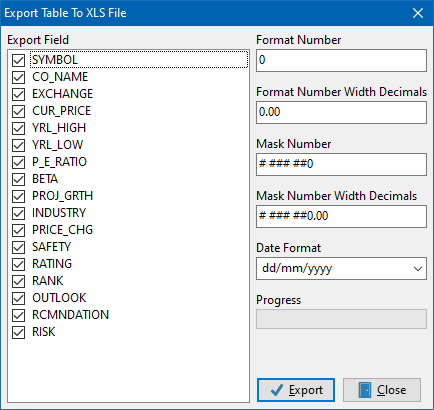

Manage your tables anywhere...

| MyDbf Studio Manage your tables anywhere...
|
|
MyDbf Studio User GuideIntroduction
After starting the program you can see the main window with the menu bar and the toolbar.
In the menu bar you can view the items used to manage your tables, while in the toolbar
there are four buttons for basic operations ( To create a new tableOn the toolbar click the New button or go to File > New... in the menu. In the window that appears you can directly insert in the grid the field name, field type and length (if requested). You can also choose the type of the table. The table types supported are:
Furthermore you can define indexes for the table by clicking the button Define Index. In the new window you can select the field or insert an expression between fields(like Field1 + Field2) and you can also set the options for the index (Primary, Unique, Descending or Case Insensitive). Finally you should enter a name for the index and confirm by clicking the OK button. To save the new table, just click on the OK button and select the path and the name of the file. To open an existing table
On the toolbar click the "Open" button
Alternatively you can drag dbf files from the operating system onto the MyDbfStudio window. Or you can specify the file names as parameters on the command line: mydfstudio first_file.dbf second_file.dbf To open an existing table(s) by aliasOn the toolbar, click the "Open by alias" button or go to "File" > "Open by Alias" in the menu. You can use an internal alias to open the file in any location on your hard disk. This function speed up the search of a table in your archives. To define a new alias just click on the "Add Alias" button and insert a name for the alias and the path where the tables are. Click on the alias on the "MyDbf Studio Alias"'s grid to show the relative tables. You can select one or more tables to open. To rename a tableIf after opening a table you need to save it under a different name, you can use the "Save As" command in item "File" of the menu bar. This command will also export index files.To close a tableTo close a table simply click on the button "x" of the window go to "File" > "Close" in the menu.To close all open tablesTo close all open tables simply go to "File" > "Close All".Working with a tableAfter you have successfully opened a table, you encounter this: 
As you can see, everything you need to manipulate your table is in this window. The second group of buttons, from left, is used to navigate between records, to insert, delete, edit... The first group of buttons invokes special functions like:
Moreover, in the Filter field you can enter a command to filter the table records, e.g.: Field1="Test" or DateField > "2017/02/03" The combobox contains the list of indexes on the table, you just click on it to select one. This sorts the grid by the index specified. By selecting Show Deleted you can activate, or not, the visualization of deleted records. To export the table in other formatsMyDbf Studio allows you to export data displayed in a table in different formats, currently are supported:
In all cases, you can choose which fields to export from the active table. Here we will see some examples... To export table in Comma Separated Value (.CSV)With an active table selected, click on Tools > Export > To CSV File, the following window will appear on the screen: 
As you can see, you can check which fields to export. Also you can specify the separator between the data fields, the date format, the field delimiter and possible strings to be ignored. The values set as shown in the image generate a file type "FIELD1","FIELD2"... Click the OK button, and you must choose the location where to save the file. To export table to HTML fileWith an active table selected, click on Tools > Export > To HTML File, the window will appear on the screen: 
In this window you can set the look of the table that will be generated in HTML format. In the "Page Title" you can specify the title of the html page, the default is the dbase file name. Also in this export can select the fields to export. Click the OK button and you must choose the location where to save the file To export table to XLS fileWith an active table selected, click on Tools > Export > To XLS File, and the following window will appear on the screen: In this window you can set the parameters necessary to create the .xls file for Excel©.
Also in this export can select the fields to export. After clicking on the OK button, you must choose the location where to save the file. To export table to DBF fileWith an active table selected, click on Tools > Export > To DBF File the following window will appear on the screen: 
This feature allows you to export a table to another dbf table but you can choose which fields you need in the new file You can also specify a different type of table. Warning: The indexes are not exported Click the OK button, and you must choose the location where to save the file. To export table to XML fileWith an active table selected, click on Tools > Export > To XML File. The following window will appear on the screen:  < <
This function creates a file in XML format that represents the records displayed on screen. The file can be viewed with any web browser and can be used to send data between remote computers. Click the OK button and you must choose the location where to save the file. To export table to SQL scriptWith an active table selected, click on Tools > Export > To SQL Script. The following window will appear on the screen: 
This function creates a script file in SQL language that allows you to create the table in an SQL database and to insert the records displayed on screen. You can chose to generate only the CREATE TABLE script or the script with the INSERT INTO commands, or both files. Click the OK button and you must choose the location where to save the file. To add two tablesThis function works on two equal tables and allows you to add records from the first table to the second, or vice versa. At first, you need to open the two tables, then go on to Tools > Add Two Tables; then this window will appear: 
Just select the first and the second table from tables used in the program and decide the priority of the operation. Finally click OK to start the operation. To substract two tablesThis function always works on two equal tables and allows you to remove similar records from two tables. At first you need to open the two tables, then go on to Tools > Substract Two Tables; then this window will appear: Just select the first and the second table from tables used in the program and decide the priority of the operation. Finally click OK to start the operation. To directly empty one or more tablesIf you want to delete all records in one or more tables without opening files you can use the function located in Tools > Empty tables...: simply select the table(s) that you want to empty and click on Open. To sort a table on fieldsThis function sorta a table's records on fields defined by the user. With an active table selected, click on Tools > Sort Table, and the following window will appear on the screen: Just select the sort order (ascending or descending) and the field(s) that you want to use for sorting records and click on the OK button. ATTENTION: This function is very slow on tables with many records. |
|

©2010-2017 by Calogiuri Enzo Antonio modified by W. Pamler |
 or go to "File" > "Open..." in the menu. Browse the system
until you find the file you want to open and select it.
You can also select multiple files to open by pressing the
CTRL key while clicking.
or go to "File" > "Open..." in the menu. Browse the system
until you find the file you want to open and select it.
You can also select multiple files to open by pressing the
CTRL key while clicking.
 Pack table compacts the table, physically removes the deleted records.
Pack table compacts the table, physically removes the deleted records.
 Deletes only visible records.
Deletes only visible records.
 Set field value allows you to set a value for a table record.
Can either be a fixed value or the result of a
mathematical operation between two fields (+,-,*,/).
Set field value allows you to set a value for a table record.
Can either be a fixed value or the result of a
mathematical operation between two fields (+,-,*,/).